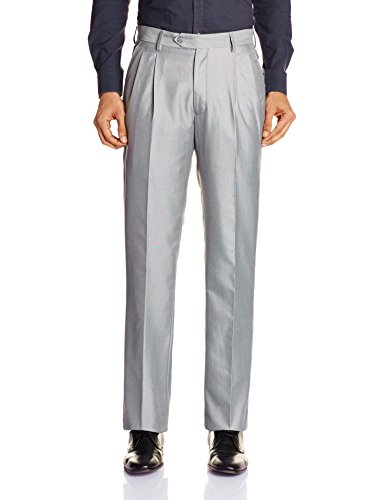
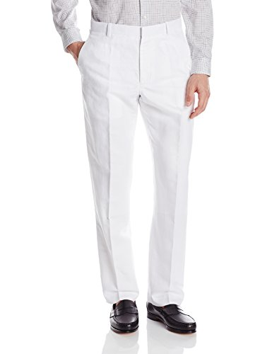
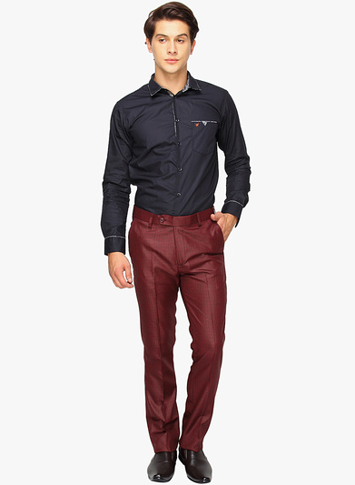
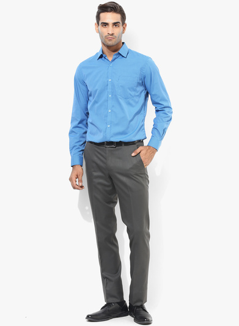
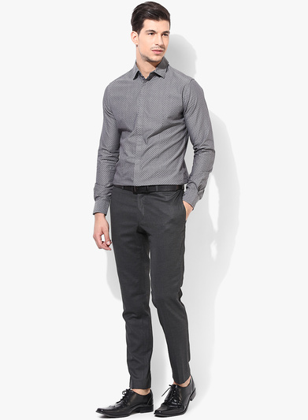
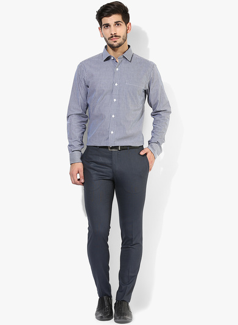
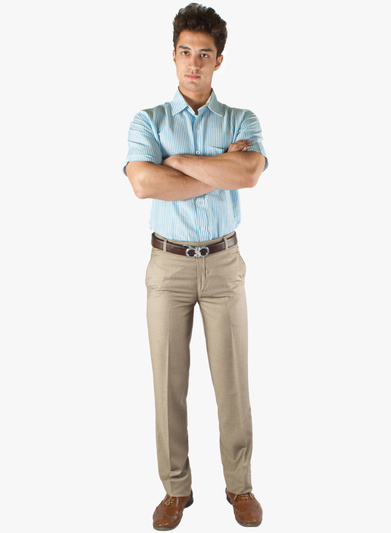

SHOPPER: Hello
AGENT: Hi, please tell me what i can help you with?
SHOPPER: I need to shop formal trouser sporting a loop closure for myself .
AGENT: Can you please tell me your gender?
SHOPPER: male
SHOPPER: I am a 16 year old guy.
AGENT: Okay Good!
AGENT: let me just quickly search through my catalogue of items
AGENT:


AGENT: What you can see in the second item, take a cue from stylish gents around the globe and build your wardrobe with polished and versatile pieces, such as our linen trousers.
SHOPPER: I dont like the style in the 1st image. Can you show me some more
AGENT:





AGENT: About the fourth one, get ready to complete your everyday business looks this season with these navy blue coloured trousers from jack & jones. See the 5th one, flaunt the youthful, laidback look wearing beige coloured slim fit formal trousers by jctex. And to describe the third image, get complimented upon for your spectacular dressing sense by wearing these well-tailored formal trousers for men by jack & jones.
SHOPPER: Sort these by best seller ranking
AGENT: Sorry i do not have the best seller ranking information for these
SHOPPER: Thank you for showing me all this, i guess i will leave
AGENT: Sure, would be glad if you can provide a feedback on your experience